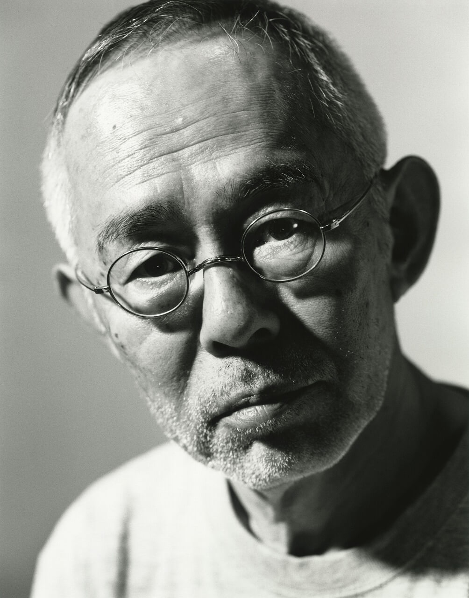
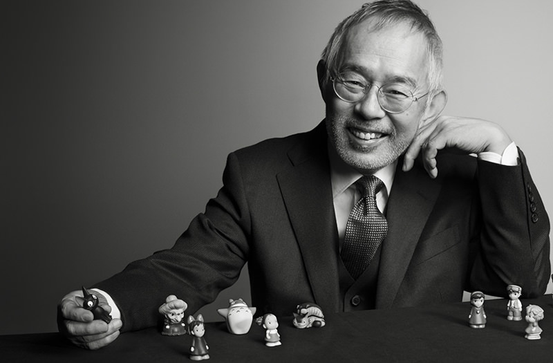
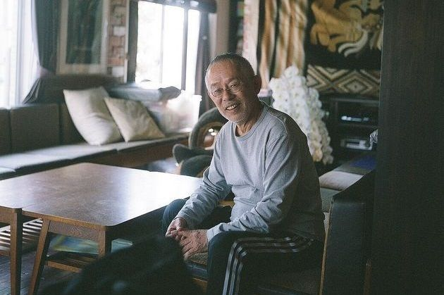

Studio Ghibli |
Intro Video
青年时期在父亲要求下以及自身对东京有所憧憬，铃木敏夫前往庆应义塾大学就读。而在就读大学期间正值日本民间发生反对日本介入越战的羽田事件，当时铃木敏夫曾接触过校内的学生运动。
后一年则转入到儿童电视主题杂志《月刊电视园地》（テレビランド）下，此期间多担任一些八卦新闻的杂志记者。
铃木敏夫接任此事务一职后，首次要采访的对象为先前在1968年创作出剧院动画《太阳王子 霍尔斯的大冒险》的高畑勋、宫崎骏俩人。虽然在初次向对方提出采访时；遭到高畑勋花上约一钟头时间提出理由拒绝、以及宫崎骏对于采访条件若没有16页内容便不接受的严苛要求而放弃，但俩人特有的个人风格让铃木敏夫印象极深，并在专门播放经典影片的戏院上亲自观看《太阳王子 霍尔斯的大冒险》后；对高畑与宫崎在动画的表现手法上佩服，之后便不断寻找机会与俩人见面会谈。
后续高畑勋在电视动画《小麻烦千惠》的杀青宴会上向铃木敏夫致上谢意；表示著平时与铃木敏夫的会谈过程能让他更清楚这部作品方向。而铃木敏夫在此得到认同的场合下，开始产生投入动画幕后制作的念头。
吉卜力起初的三份作品《天空之城》、《龙猫》、《萤火虫之墓》在票房表现上并未特别亮眼，直到1989年上映的《魔女宅急便》票房成绩达到21亿日圆；才奠定了吉卜力的口碑。因吉卜力开始受到影迷的重视，铃木敏夫在制度上作了改变并欲建立新的工作室，却也让当时的吉卜力管理者原彻与铃木敏夫理念不合而离开。
铃木敏夫从吉卜力成立后，一直是高畑勋、宫崎骏俩人重要的左右手。而铃木敏夫从高畑勋身上习得动画制作人的要领后，便在1991年上映的吉卜力动画《回忆点点滴滴》起，开始担任吉卜力长篇剧院动画的制作人，并在1990年就任为工作室的董事。
2005年吉卜力从德间书店集团下脱离成为独立公司后，铃木敏夫在没有其他人愿意出面之情况下；成为了吉卜力的社长。2008年铃木敏夫则将社长位子转任给星野康二后，继续担任吉卜力动画制作人。
于2014年3月铃木敏夫宣布将从不再从事吉卜力的动画制作人；并将此职务转交给西村义明担任，往后则专注在吉卜力内部的管理。
 >

风之谷（1984年）：制作委员会成员
天空之城（1986年）：制作委员会成员
龙猫（1988年）：协助
魔女宅急便（1989年）：制作人助理
回忆点点滴滴（1991年）：动画制作人
红猪（1992年）：动画制作人
平成狸合战（1994年）：动画制作人
梦幻街少女（1995年）：动画制作人、角色“北先生”配音
魔法公主（1997年）：动画制作人、串场角色配音
我的邻居山田君（1999年）：动画制作人
神隐少女（2001年）：动画制作人
下课后剧场版（2001年）：出资
猫的报恩（2002年）：动画制作人
攻壳机动队2 INNOCENCE（2004年）：动画制作人
哈尔的移动城堡（2004年）：动画制作人
地海战记（2006年）：动画制作人
崖上的波妞（2008年）：动画制作人
借东西的小人阿莉埃蒂（2010年）：动画制作人
红花坂上的海（2011年）：动画制作人
风起了（2013年）：动画制作人
辉夜姬物语（2013年）：企划
回忆中的玛妮（2014年）：出资
最后的德鲁伊：加尔姆战争（2016年）：日语版动画制作人
红海龟（2016年）：出资
On Your Mark（1995年）：动画制作人
捕鲸记（2001年）：执行制作人
克洛的大冒险（2002年）：执行制作人
梅伊与龙猫巴士（2002年）：动画制作人
Ghiblies episode2（2002年）：执行制作人、角色造形提供
便携式机场（2004年）：动画制作人
Space station No.9（2005年）：动画制作人
飞天城市规划（2005年）：动画制作人
水蜘蛛纹纹（2006年）：动画制作人
寻找家园（2006年）：动画制作人
种下星星的日子（2006年）：动画制作人
鼠相扑（2010年）：动画制作人
酵母与鸡蛋公主（2010年）：动画制作人
寻宝（2011年）：动画制作人
海潮之声（1993年）：企划
Ghiblies（2000年）：角色造形提供
巨神兵现身东京（2012年）：出资
式日（2000年）：出资
心灵感应（2000年）：出资
Killers （2003年）：饰演角色“没良心的动画制作人”（悪徳アニメプロデューサー）
立食师列传（2006年）：饰演角色“‘凉拌狸猫面’政”（冷やしタヌキの政）
真·女立食师列传（2007年）：作品提字、饰演角色“坂崎一编集长”
切·格瓦拉（2009年）：电影广告标语提供（日本上映用）
《魔法公主》是这样完成的（1998年）
谢谢你，约翰·雷斯特先生（2003年）
《崖上的波妞》是这样完成的。～宫崎骏的思考过程～（2009年）
梦与疯狂的王国（2013年）
工作专业的手法（プロフェッショナル 仕事の流儀）：2006年4月10日于节目登场
情热大陆：2014年8月3日于节目登场
机动警察：次世代（2015年）：于第6集演出
日清制粉集团（2010年）：广告角色“コニャラ”设计提供

1992年第11届藤本赏特别奖
1997年第14届山路ふみ子文化奖
1998年第17届藤本赏
2002年第21届藤本赏
2002年AMD Award / Digital Contents of the Year '01特别奖
2002年Digital Content Grand Prix 2001・DCAj会长奖
2002年Élan d'or制作人奖
2002年第1届日本创新者大奖
2007年第2届渡边晋奖
2014年第64届艺术选奖文部科学大臣赏
2014年日本版《CQ》杂志评选年度人物之一
2015年AMD Award / 20周年纪念特别奖
Films Produced | Intro Video
生平
早期
出生于名古屋市的成衣业家庭，小时受分别喜爱日本片与西洋片的父母亲影响而开始对电影产生兴趣。青年时期在父亲要求下以及自身对东京有所憧憬，铃木敏夫前往庆应义塾大学就读。而在就读大学期间正值日本民间发生反对日本介入越战的羽田事件，当时铃木敏夫曾接触过校内的学生运动。
杂志记者时期
于庆应义塾大学毕业后，在1972年进入德间书店；在当时旗下所发行的周刊《ASAHI艺能》（週刊アサヒ芸能）里就职。在《ASAHI艺能》时铃木敏夫曾试着创办发行名为《Comic & Comic》的漫画杂志，也因此让他有与手冢治虫等漫画家往来的机会。后一年则转入到儿童电视主题杂志《月刊电视园地》（テレビランド）下，此期间多担任一些八卦新闻的杂志记者。
与高畑勋及宫崎骏的相识
1978年，铃木敏夫在毫无准备的情况下，被当时与他一同部门工作的尾形英夫任命为以报导动画、漫画消息为主题的杂志《Animage》的编辑。铃木敏夫接任此事务一职后，首次要采访的对象为先前在1968年创作出剧院动画《太阳王子 霍尔斯的大冒险》的高畑勋、宫崎骏俩人。虽然在初次向对方提出采访时；遭到高畑勋花上约一钟头时间提出理由拒绝、以及宫崎骏对于采访条件若没有16页内容便不接受的严苛要求而放弃，但俩人特有的个人风格让铃木敏夫印象极深，并在专门播放经典影片的戏院上亲自观看《太阳王子 霍尔斯的大冒险》后；对高畑与宫崎在动画的表现手法上佩服，之后便不断寻找机会与俩人见面会谈。
后续高畑勋在电视动画《小麻烦千惠》的杀青宴会上向铃木敏夫致上谢意；表示著平时与铃木敏夫的会谈过程能让他更清楚这部作品方向。而铃木敏夫在此得到认同的场合下，开始产生投入动画幕后制作的念头。
吉卜力成立至今
1984年宫崎骏创作的动画《风之谷》上映并获得回响，但当时制作《风之谷》的动画公司Topcraft在作品上映后便解散。铃木敏夫为了让高畑勋与宫崎骏能有一个专用的动画制作环境，而成立了“吉卜力工作室”。吉卜力起初的三份作品《天空之城》、《龙猫》、《萤火虫之墓》在票房表现上并未特别亮眼，直到1989年上映的《魔女宅急便》票房成绩达到21亿日圆；才奠定了吉卜力的口碑。因吉卜力开始受到影迷的重视，铃木敏夫在制度上作了改变并欲建立新的工作室，却也让当时的吉卜力管理者原彻与铃木敏夫理念不合而离开。
铃木敏夫从吉卜力成立后，一直是高畑勋、宫崎骏俩人重要的左右手。而铃木敏夫从高畑勋身上习得动画制作人的要领后，便在1991年上映的吉卜力动画《回忆点点滴滴》起，开始担任吉卜力长篇剧院动画的制作人，并在1990年就任为工作室的董事。
2005年吉卜力从德间书店集团下脱离成为独立公司后，铃木敏夫在没有其他人愿意出面之情况下；成为了吉卜力的社长。2008年铃木敏夫则将社长位子转任给星野康二后，继续担任吉卜力动画制作人。
于2014年3月铃木敏夫宣布将从不再从事吉卜力的动画制作人；并将此职务转交给西村义明担任，往后则专注在吉卜力内部的管理。
参与作品
长篇电影动画
短篇动画
电视动画
特摄影片
真人电影
制作记录片
电视节目
电视剧
电视广告
荣誉
Films Produced | Intro Video